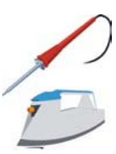
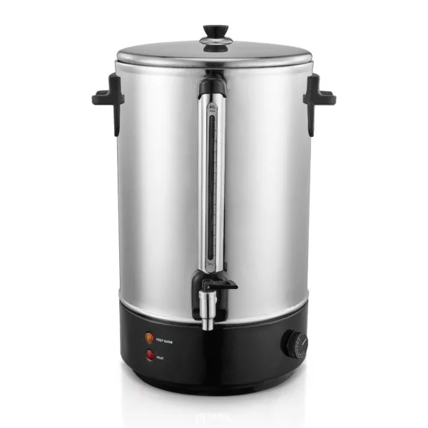

PERUBAHAN ENERGI LISTRIK MENJADI ENERGI PANAS
Energi listrik dapat dirasakan manfaatnya setelah diubah menjadi bentuk energi lain, misalnya pada saat memanaskan air, menyetrika pakaian, atau memanaskan suhu ruangan. Salah satu perubahan bentuk energi listrik adalah menjadi energi panas. Alat-alat yang dapat mengubah energi listrik menjadi energi kalor, misalnya setrika listrik dan pemanas air. Untuk lebih memahami perubahan energi listrik menjadi energi kalor yang terjadi pada kedua alat tersebut, pelajarilah pembahasan berikut.
A. Setrika Listrik
Pernahkah kamu menyetrika pakaian menggunakan setrika listrik? Di bagian dalam setrika listrik, terdapat komponen yang disebut pemanas (heater). Sebagian heater terdiri atas kawat halus yang terbuat dari nikel dan dililitkan pada mika. Bagaimanakah kawat kecil itu bisa menjadi panas? Pada saat arus listrik mengalir melalui kawat halus, elektron- elektron akan sulit mengalir melalui kawat karena hambatan kawat halus sangat besar. Elektron-elektron tersebut akan mengalami tumbukan dengan atom-atom kawat penghantar. Tumbukan tersebut menyebabkan kawat menjadi panas. Panas ini, kemudian dipindahkan pada logam yang dilekatkan pada kawat sehingga setrika listrik menjadi panas. Setrika listrik adalah salah satu alat yang dapat mengubah energi listrik menjadi energi panas atau energi kalor. Alat lain yang dapat mengubah energi listrik menjadi energi panas, antara lain kompor listrik, solder listrik, dan pemanas air.
B. Pemanas Listrik
Apakah kamu pernah memasak air menggunakan pemanas air listrik? Pada pemanas air, energi listrik diubah menjadi energi kalor. Pemanas air listrik memiliki prinsip kerja yang sama dengan setrika listrik. Kedua alat tersebut memiliki elemen pemanas. Pada pemanas air, elemen pemanas terbuat dari kawat nikrom, yaitu campuran antara nikel dan kromium. Kawat nikrom memiliki hambatan yang besar dan tahan terhadap suhu tinggi. Kawat ini dililitkan pada satu lempengan isolator tahan panas. Pada pemanas air tersebut, lilitan kawat nikrom dilapisi kembali oleh bahan isolator tahan panas agar penggunaannya lebih aman.
Suatu pemanas listrik dihubungkan dengan sumber tegangan 6 V dan arus listrik yang mengalir adalah sebesar 4 A. Jika pemanas itu dipakai selama 4 menit, hitung energi kalor yang dihasilkan pemanas tersebut.
Penyelesaian:
Diketahui:
V = 6 volt
I = 4 A
t = 4 menit = 4 × 60 sekon = 240 sekon
Ditanyakan: energi kalor (W)
Jawab:
W = V I t
W = 6 V × 4 A × 240 s
W = 5.760 joule
Jadi, energi kalor yang dihasilkan setrika adalah 5.760 joule.
Setrika listrik bertegangan 220 V dihubungkan dengan sumber
tegangan yang bernilai sama. Jika elemen pemanas setrika tersebut
memiliki hambatan sebesar 1.000 ohm, berapa joule kalor yang
dihasilkannya selama dua menit?
Penyelesaian:
Diketahui:
volt
ampere
menit = sekon
Ditanyakan: energi kalor yang dihasilkan (W)
Jawab:
W = V^2/R t
joule
Jadi, energi kalor yang dihasilkan adalah joule
Sebuah peralatan listrik dipasang pada tegangan listrik sebesar 12 volt dan arus yang mengalir adalah sebesar 750 mA. Hitunglah besarnya energi listrik yang dibutuhkan dalam jangka waktu 1 menit ?
Penyelesaian :
Diketahui :
volt
ampere
sekon
Ditanya : W = ?
Jawab:
joule